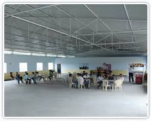
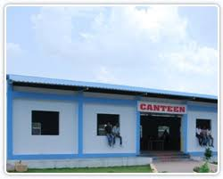

The food we serve is safe to eat.It prevent from food poisoning.


K L Deemed to be University has a spacious canteen with latest equipment and hygienic environment which provides quality food and prompts service and caters to needs of all the students and the staff.
central cafeteria of 1500 Sq.m. is available in the campus. Mini cafes and fast-food centers are available in various blocks.
The canteen is open from 6:30 a.m. to 8:30 p.m. There is a wide variety of North-Indian and South-Indian cuisine and the students enjoy the pleasure of eating during the breaks. Cool aqua water for drinking is available.